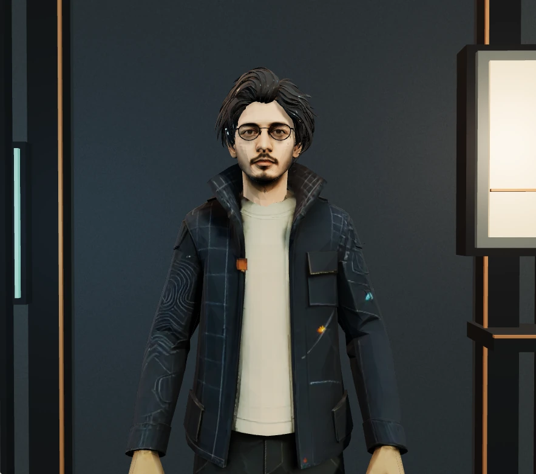

Interactive digital twin / 02
Meet my
digital twin.
Ask about my work, how I build things, or how this character moves and speaks. The answer comes from my AI counterpart, by text or voice.
3D loads on request. No microphone required.
- 18
- Motion clips
- 08
- Mouth shapes
- 30 fps
- Authored motion

THE CHARACTERPaper-cut
portrait study
portrait study